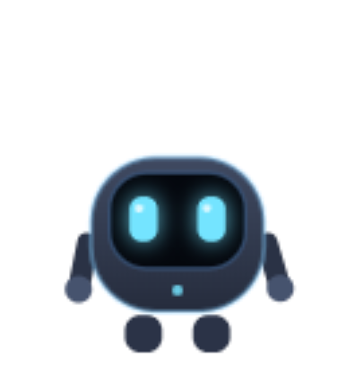
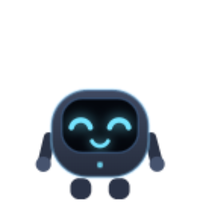
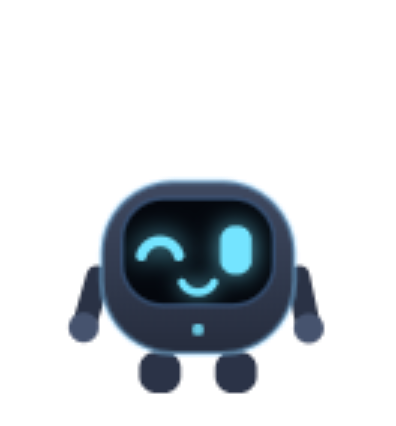
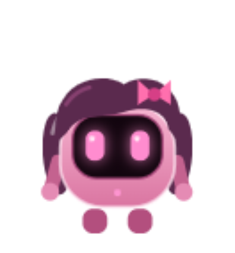
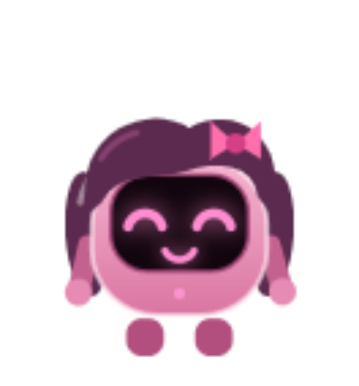
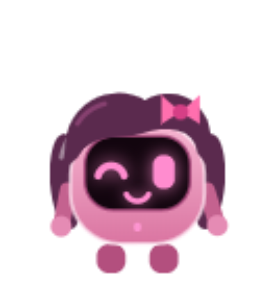
Click him and he hops. Open a window and he climbs up to say hi, with quick actions in a speech bubble. He gives friendly tips, sets timers, and answers out loud. No language model, no cloud, no subscription.
Free installer · No admin rights needed · Updates itself
Everything Teo does is a small fixed routine — instant, local and free.
Open a window or folder: Teo walks over, jumps, climbs the side and perches on the top edge — riding along if you drag it.
On the desktop he falls back to the taskbar. On a window's side edge he climbs. Over a window he hops on top.
Quick actions for what you just opened — what's inside a folder, copy its path, search the web — then he leaves you alone.
Open Google or YouTube and Teo hops onto the search box and asks what you want to find.
Drink water, stand up, rest your eyes, "you just started, keep going!" — with a sense of humor, never during a fullscreen video.
Timers, reminders, quick notes and math, typed in the bubble — local, free and unlimited.
An on-device neural voice, downloaded once and then fully offline. One prominent Mute / Unmute button, and you can start silent too.
Pick your buddy: Teo in blue, or Tea in pink with a little hair and a bow — and her own warm voice. Switch any time.
One click and he stays out of your way for an hour, then comes back on his own. Reminders still ring.
No accounts, no telemetry, no analytics. He reads window titles and positions — never what's inside, never what you type.
Real screenshots of Teo on a Windows desktop.
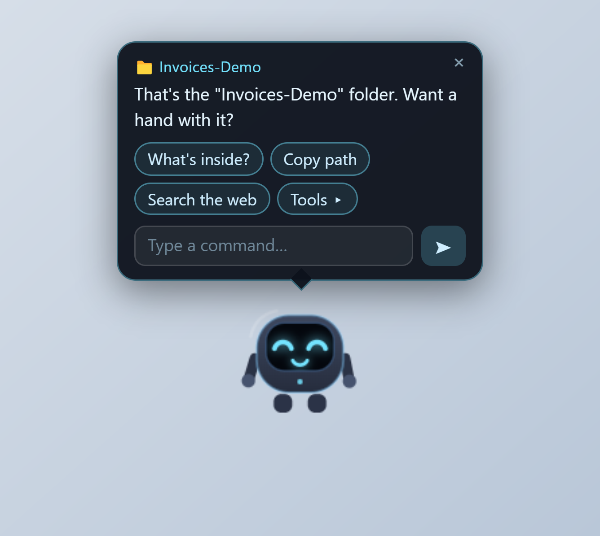
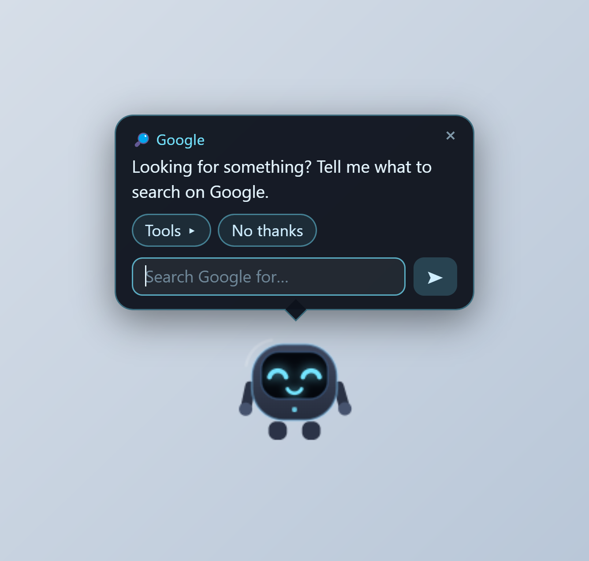
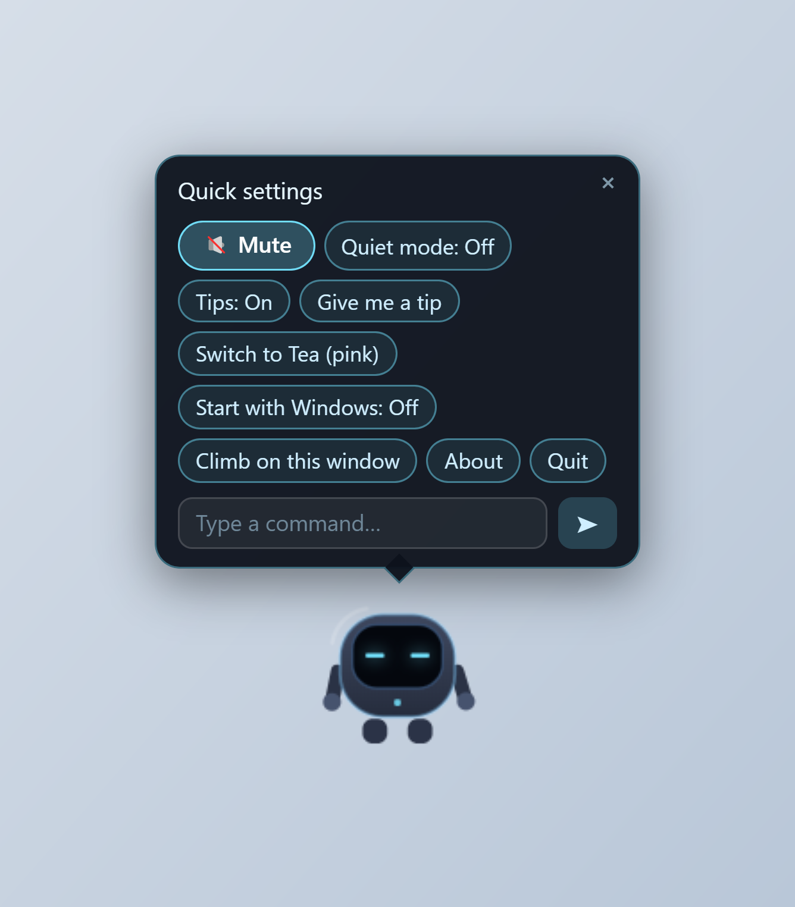
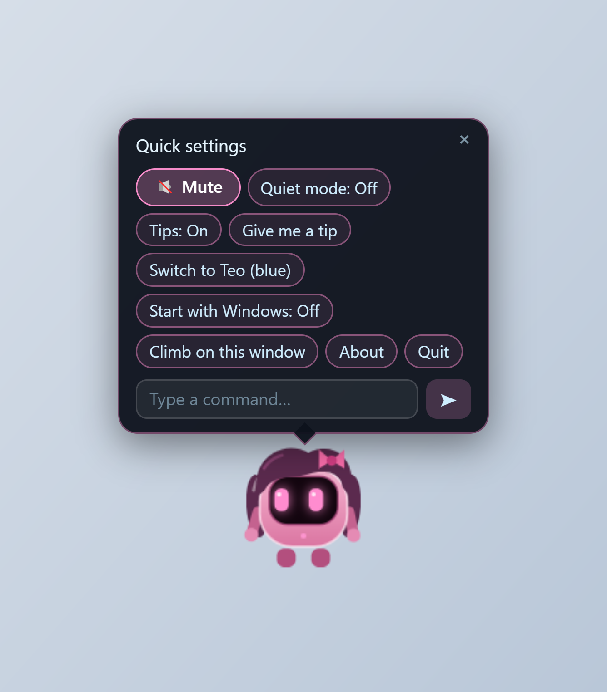
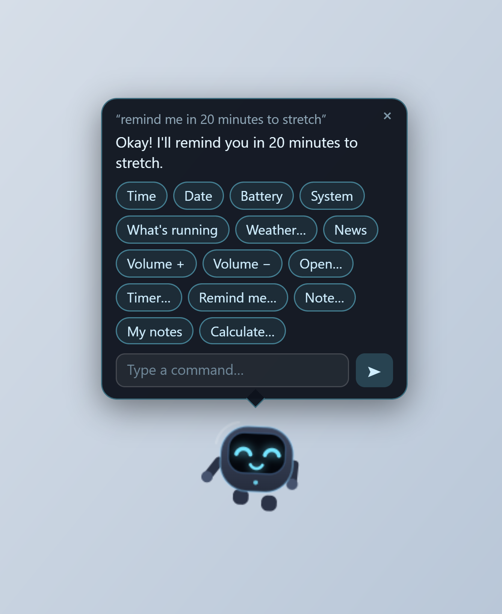
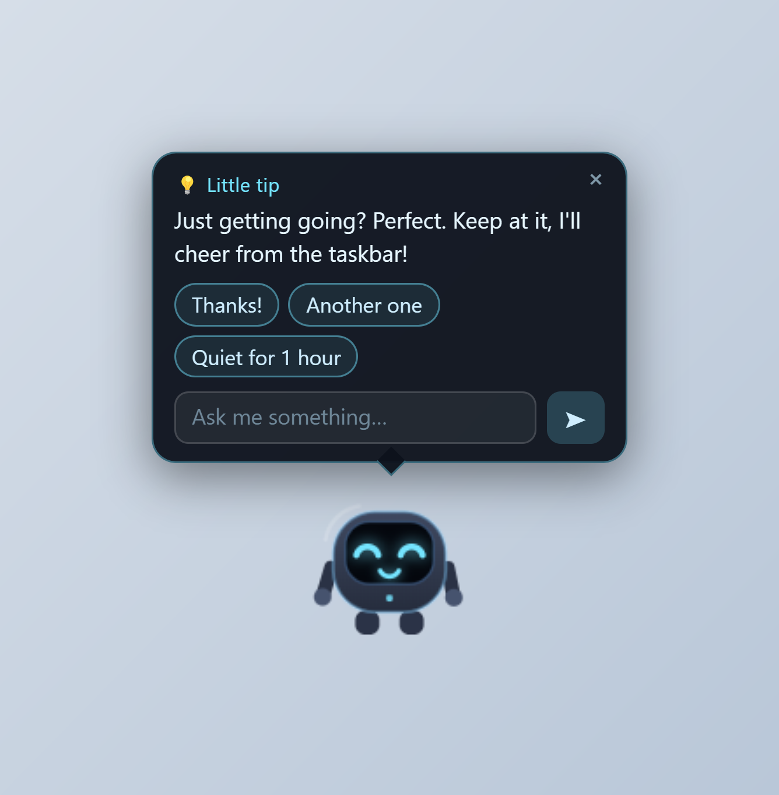
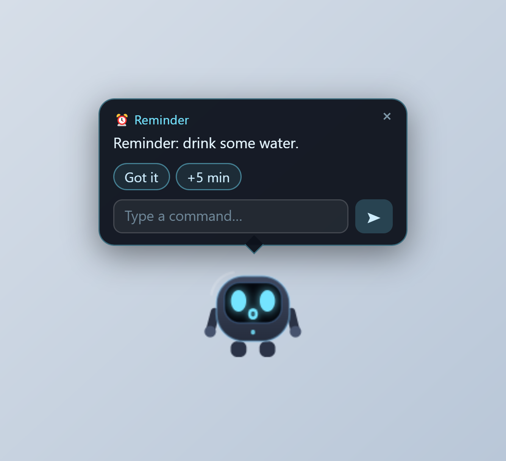
No model to install first, no account to create.
Download the installer from the latest release.
Run it. No administrator rights needed — it installs just for your account. Windows SmartScreen may warn you since the installer isn't code-signed; click More info → Run anyway.
Say hi to Teo when he walks in along the taskbar — then open a folder and watch him climb.